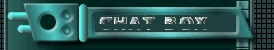

Hello, I am LaZuLi PaRaDisE. You may know me as
Rakka, or Theoria, or many of the other
names I use online. This website is a good place to be able to find all the
websites and platforms
that i publicly use. So if ever were I to be banned from a platform, check
this site for updates on
my current accounts. How ever, if you just stumbled upon this site at
random, greetings. I am a woman
in my 20s from the United States. I make videos mostly on the
griefing side of stuff. I occasionally
dabble in "truth" content, although you may call them conspiracy theories. I
am a non-denominational
Christian, and learning to draw, so i can turn the ideas i have in my head
into real stories people can
read and enjoy. So if I ever end up getting good enough to make anything, it
will get released here.
I am very into older tech, and would like to start collecting more of it
when I get my own house in the
semi near future. Currently, my setup is all older stuff. The only thing i
use that is newer than 2008
is the internals of my PC and my webcam/mic. My favorite part of the setup,
is probably my Kensington
TurboRing Trackball mouse, and my Wacom Intuos 2 Tablet.
Do not expect this site to be super high quality. I don't know to program
that much, and don't really
plan to learn how to do super advanced stuff, mostly because i find it kind
of boring and gay. How ever
I will attempt to improve as much as is fun, so hopfully this site doesn't
look or work too terribly.

CHANGE LOG
Jun, 16, 2026 - Removed the javascript nonsense and got my own domain!! :DD
Mar, 07, 2026 - Finally added RSS feeds 
Jan, 02, 2026 - New blog added
Jul, 05, 2025 - New blog and removed AIM slop
Feb, 01, 2025 - Added the gif shilling my AIM profile.
Dec, 30, 2024 - Made "Blogs" tab functional, and added first blog
Dec, 19, 2024 - added a bunch of sticker gif things 2 Homepage + chatbox/guestbook
Dec, 18, 2024 - the site is born! Drew site favicon :D